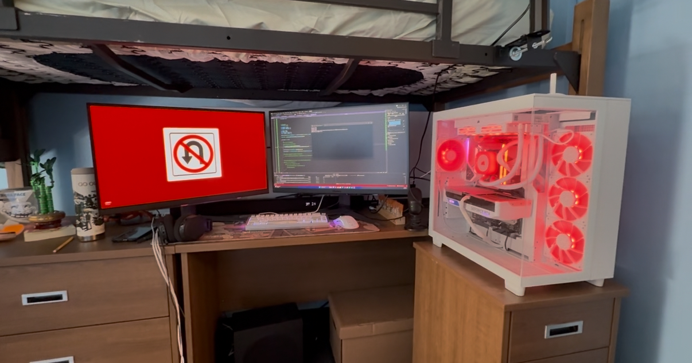
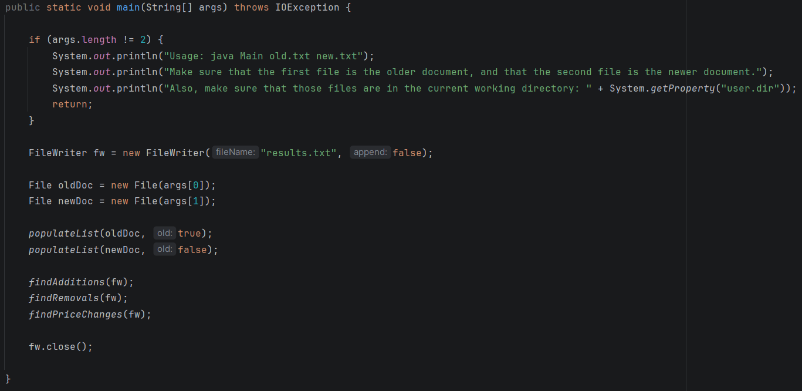
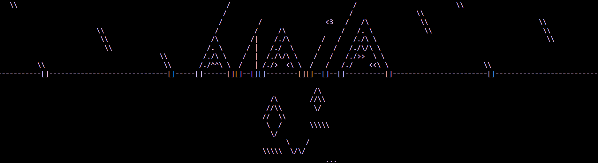

My Projects
RGB Lighting Controller
Developed in C# with Visual Studio Community
Developed a program in C# to capture the RGB values of a set of pixels on my screen in real time.
Integrated Corsair SDK to synchronize the LEDs in my PC with the display.

PDF Difference Highlighter
Developed in Java with IntelliJ
Created a program for a business in Java to find and highlight differences between two PDFs and output the results into a text file.
Presented the program to the Director of IT to use in their system.

scisr.net
Frontend developed in HTML, CSS, and JS with Visual Studio Code.
Backend developed in Java using SpringBoot with IntelliJ.
Programmed a personal website to express myself creatively and to serve as a portfolio for past and current projects.
Taught myself basic frontend and backend development with HTML, CSS, JavaScript, and Java.
Check it out here!